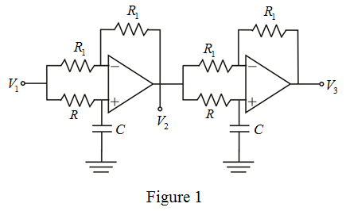

The transfer function of the above circuit is,
Here, 
The phase angle is,
Refer to Figure P16.27 in the textbook for the phasor diagram.
From the phasor diagram, write the following results:
The voltage lags by,
The voltage lags by.
The cascaded connection of two first order op amp-RC all-pass circuits is shown in Figure 1

The transfer function of the above circuit is,
Here,
The phase angle is,
Substitute for  in the equation.
in the equation.
Substitute for  and for
and for  in the equation.
in the equation.
Thus, value of  is, .
is, .
And the value of arbitrarily choosen as .